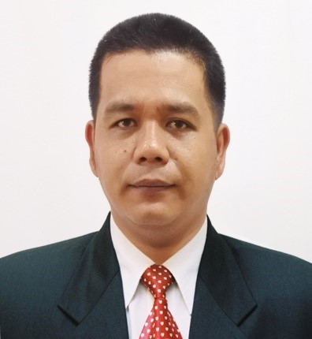

Leo Charles T. Quibuyen
Freelancer
+63-9917421279
Email:chryslee18@gmail.com
EDUCATIONAL ATTAINMENT
- Tertiary
- Fulbright College - Bachelor of Science in Computer Engineering (Undergraduate)
- Secondary
- Puerto Pricesa Shool of Arts and Trade
- Primary
- Datu Guibar Memorial Pilot Central School
WORK EXPERIENCE
- Security Personel
- NC LANTING SECURITY SPECIALIST AGENCY IN DEPARTMENT OF FOREIGN AFFAIRS
- Responsible for the security of clients and properties.
- Maintain order and flow of daily operations.
- Logging time to time activity/events
- Does related work
- Civil Security
- LGU- Puerto Pricesa City
- Augmenting security for all the events held in the coliseum.
- Responsible for the security of building and its property.
- Act as crowd control in every Events.
- Does related work.
- GENSET Operator
- LGU- City Engineering and maintenance
- Responsible for the power supply of the building if power shortage occur.
- To maintain the generator set working.
TRAININGS AND SEMINARS
- Certificate of Completion in Setting Up computer Networks
- Type of Learning Development: Technical
- Sponsored by: e-TESDA Division/NITESD
- Dated: April 19, 2020
- Certificate of Completion in Installing and Configuring Computer System
- Type of Learning Development: Technical
- Sponsored by: e-TESDA Division/NITESD
- Dated: April 15, 2020
- Certificate of Completion in Introduction to Configuring Computer System
- Type of Learning Development: Technical
- Sponsored by: e-TESDA Division/NITESD
- Dated: April 08, 2020
- Certificate of Completion in Smart Technopreneurship 101
- Type of Learning Development: Technical
- Sponsored by: e-TESDA Division/NITESD
- Dated: April 05, 2020
- Gunsafety and Responsible Handling Seminar
- Type of Learning Development: Skill Training
- Sponsored by: AMGSCOR SHOOTING RANGE AND GUN CLUB INC.
- Dated: May 09, 2019
- Pistol Markmanship Firing
- Type of Learning Development: Skill Training
- Sponsored by: PNP-REGIONAL CIVIL SECURITY UNIT MIMAROPA
- Dated: May 05, 2017
- Gender and Sensitivity Training Program
- Type of Learning Development: Team Training
- Sponsored by: THE FOREIGN SERVICE INSTITUTE
- Dated: May 29, 2016
- Gender and Sensitivity Training Program
- Type of Learning Development: Team Training
- Sponsored by: DFA-RCO PUERTO PRINCESA/PALAWAN PRIME MOVERS ADVOCACY COOPERATIVE
- Dated: June 07, 2015